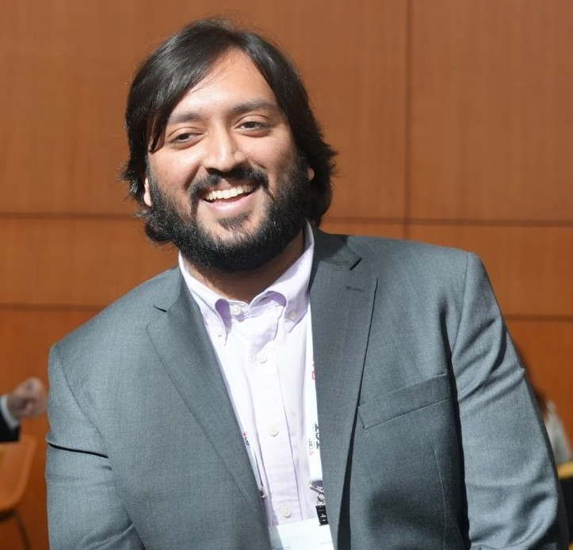
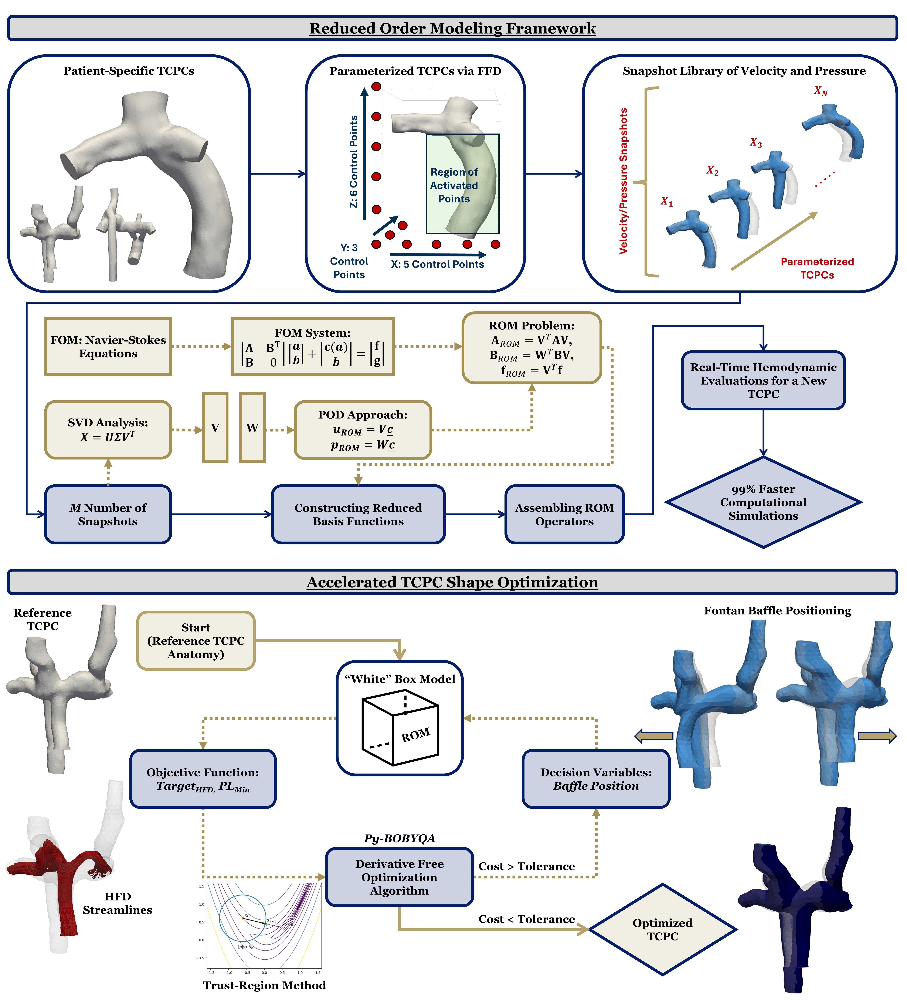

Cardiovascular Biomechanics · Computational Modeling
Developing real-time predictive frameworks for cardiovascular surgical planning, bridging reduced order modeling, fluid mechanics, and clinical translation.
About

My research interests lie at the intersection of cardiovascular fluid mechanics and predictive computational modeling. I develop novel methodologies aimed at providing real-time mechanical information — fluid and solid — for cardiovascular surgical planning procedures, including Transcatheter Aortic Valve Replacement (TAVR), the Fontan Operation, and Percutaneous Coronary Intervention.
I'm passionate about developing data- and model-driven computational techniques for optimizing treatment of cardiovascular diseases, and translating these approaches for real-time use in the clinic.
Research
Developing reduced order model-driven frameworks for real-time predictive modeling of TAVR deployment mechanics — enabling patient-specific pre-procedural risk assessment of coronary obstruction.
Real-time shape optimization of the total cavopulmonary connection (TCPC) for patient-specific Fontan surgical planning via hyper-reduced order models and free-form deformation.

CoronaryInvestigating the effects of drug-eluting stent platforms on endothelial wall shear stress in patient-specific coronary arteries — data from the prospective SHEAR-STENT clinical trial.
Publications
Real-Time Hemodynamic and Shape Optimization Simulations for Patient-Specific Fontan Surgical Planning via Reduced Order Modeling In Preparation
Manuscript in Preparation
Real-Time Predictive Modeling of Patient-Specific TAVR Deployment Mechanics In Preparation
Manuscript in Preparation
Intravascular Ultrasound Wall Shear Stress Imaging in Stented Coronary Arteries with Ultrafast Doppler New
Scientific Reports (Recently Accepted)
Cardiovascular Revascularization Medicine, 2025
Computer Methods and Programs in Biomedicine, 266:108762, 2025
Annals of Biomedical Engineering, 52(2):208–225, 2024
The International Journal of Cardiovascular Imaging, 39:1375–82, 2023
Structural Heart, 6(2), 2022
Teaching & Recognition
Georgia Institute of Technology
Graduate Student Research Mentor
Undergraduate Research Mentor
BMED 3410: Introduction to Biomechanics
BMED 2310: Introduction to Biomedical Engineering Design
BMED 3520: Biomedical Systems and Modeling
Selected Honors & Awards
American Heart Association Predoctoral Fellowship
GA Chapter ACC Governor's Award for Excellence in Research
Emory Global Health Hackathon — 1st Place
Emory GHA 2040 Healthcare Futuring Competition — 1st Place
CREATE-X Startup Launch Finalist · AQUApro
Complete list of publications, conference presentations, awards & experience.